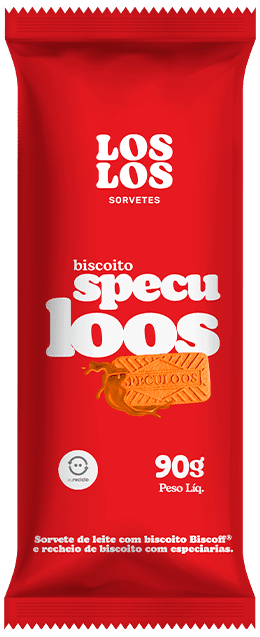
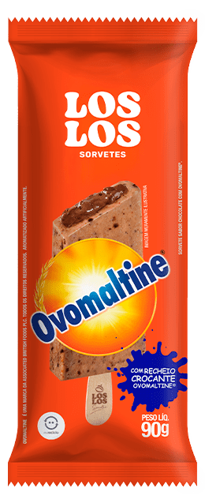
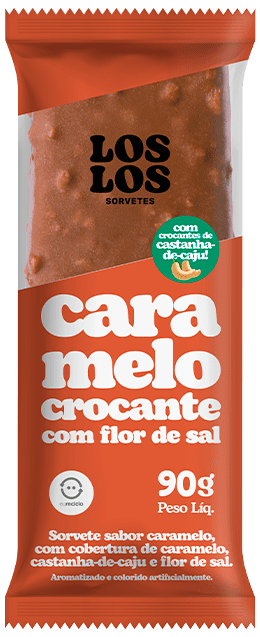
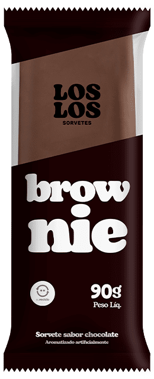
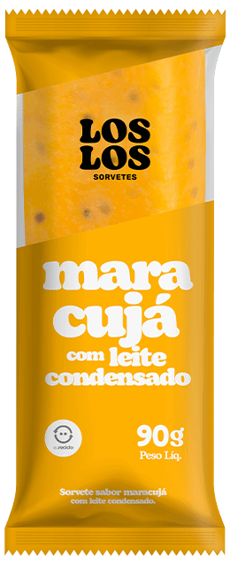

Em 2014 vocês
não venderam
sorvete. Instalaram
um canal.
Doze anos depois são 6.200 freezers acesos em 11 estados. Cada um é uma loja da Los Los. E a maior parte delas abre, vende e fecha sem ninguém ver.
Fontes do dado de marca: sorvetesloslos.com.br (6.200 pontos de venda, mais de 60 produtos, 11 estados) e ABRAMARK (freezer em comodato desde 2014, mais de 3 milhões de novos consumidores). Base do diagnóstico: conversa Los Los × 75 LAB de 14 de setembro de 2026.
2.800 freezers cabem numa rota de visita.
Os outros 3.400 não.
pontos de venda no BrasilCada freezer é uma vitrine da marca e o único vendedor presente na hora da decisão.
concentrados em São PauloO raio onde a operação consegue visitar, corrigir e aprender. É de onde vem quase toda a evidência de execução que existe hoje.
fora do raio de visita55% do parque instalado decide sozinho o que o shopper vê, quanto tempo o material fica no ar e em que estado o freezer opera.
Escalar visita presencial para 6.200 PDVs não é economicamente viável. A saída não é mais gente na rua: é priorizar quem merece visita e criar um mecanismo de prova que funcione sem ela.
Do que hoje não se enxerga até a decisão de investimento.
Clique em qualquer capítulo para ir direto. Navegação por setas, scroll, espaço ou a tecla M para o índice completo.
O problema não é fazer mais peças.
É saber onde cada peça muda um número.
Critérios de sucesso do primeiro ciclo: escolher melhor onde atuar, provar que a intervenção move execução ou giro, e demonstrar que um terceiro consegue repetir o padrão. Riscos assumidos: dado de sell-out incompleto, produção aprovada sem budget e promotoria fora do controle direto.
Oito sinais que vocês nos deram.
Oito decisões de desenho.
Priorizar vale mais
do que visitar.
Controlar a operação só com presença física não fecha a conta. O plano precisa de um mecanismo de priorização que diga quais PDVs merecem intervenção agora, e de um mecanismo de escala para todos os outros.
A 75 LAB entra
como célula de trade.
Não como fornecedor de peças. A operação precisa de alguém que organize prioridades, desenhe as soluções, conduza os pilotos e coordene produção, sem multiplicar headcount interno.
Execução operacional
vira execução comercial.
Sair do padrão limpo e organizado para um sistema que trata sortimento, visibilidade, ocasião, comunicação e conversão. O freezer deixa de ser um armário e vira o vendedor da marca.
Tecnologia nasce como
produto separado.
Com MVP, gates e business case próprios. Antes da IA, é preciso ter padrão de foto, checklist e score definidos. Plataforma complexa sem disciplina de captura na ponta não gera dado confiável.
Playbook por canal,
não campanha única.
Condomínio, padaria e restaurante não perdem giro pelo mesmo motivo. Cada queda precisa de hipótese, intervenção e métrica próprias, e de um programa de recuperação, não de uma peça nacional.
Experimentar sem
distribuir o produto inteiro.
Com o picolé concentrando o faturamento, a barreira de experimentação vira o gargalo do crescimento. É preciso um produto que crie desejo e familiaridade antes da compra, a um custo por trial menor que o do sampling tradicional.
Distribuidor é operação,
não só logística.
Para investir localmente com padrão, o distribuidor precisa de catálogo homologado, kits prontos, treinamento curto e comprovação por foto. A Los Los define o padrão e a governança; a ponta executa e comprova.
Entrada cirúrgica,
produção como carteira.
O pacote inicial precisa caber na faixa sinalizada, com poucos projetos prioritários. E a produção passa a ser gerida como carteira anual com reservas por função, não como um valor fixo obrigatório todo mês.
Fonte factual dos sinais: transcrição da reunião Los Los × 75 LAB de 14 de setembro de 2026. Os números reproduzem o que foi declarado na conversa. As implicações são leitura estratégica da 75 LAB.
A categoria cresce. E a disputa
pelo mesmo freezer cresce junto.
de faturamento anual do setor de sorvetes no Brasil.
Fonte · ABISde crescimento projetado para as vendas de sorvete em 2026, depois de 2025 fechar em 6,8%.
Fonte · Abrasorvete, via Estadão Conteúdode consumo per capita por ano, um dos patamares mais baixos entre os grandes produtores.
Fonte · imprensa setorialempresas de sorvete no país, sendo 92% micro e pequenas, quase todas disputando espaço frio.
Fonte · ABISCrescimento de categoria não chega distribuído. Ele chega para quem está visível na hora da decisão. Com mais de 10 mil empresas no jogo, o espaço frio do varejo vira o recurso escasso, e o freezer de marca passa a ser vantagem competitiva, não custo de operação.
A Los Los já tem o produto de experiência e a malha de distribuição. Falta ocupar o canto de cima.
experiência de marca com execução comprovada em escala nacional
Produto com linguagem de indulgência, mais de 60 itens e collabs de marca, somado a uma malha de 6.200 freezers próprios em 11 estados. Poucas marcas da categoria têm as duas coisas.
Prova de execução. A escala existe no papel, mas não existe evidência recorrente de como cada um desses freezers se apresenta ao shopper.
Ninguém na categoria ocupou o lugar de marca que prova a própria execução. É um território de diferenciação comercial, não só de comunicação.
Leitura de posicionamento da 75 LAB a partir de material público das marcas (sites, portfólio, presença em canal e cobertura de imprensa). Não é medição de market share e não substitui um estudo de participação com base auditada.
A decisão acontece em segundos.
O freezer é o único vendedor presente.
Passar
O freezer entra no campo de visão do fluxo ou some no fundo da loja.
Parar
Alguma coisa precisa justificar a parada: ocasião, preço claro ou novidade.
Abrir
A tampa abre. A partir daqui o shopper está sozinho com o sortimento.
Escolher
O sortimento precisa se explicar sem promotor e sem embalagem na mão.
Levar ou largar
Sem motivo claro, a mão fecha a tampa. A venda não foi perdida no preço.
das decisões de compra são tomadas na frente da gôndola, não antes de entrar na loja. Fonte · Nielsen
dos shoppers de supermercado entram com a intenção de comprar sorvete. O resto é conquistado na loja. Fonte · imprensa setorial de varejo
de venda atribuída a exposição em ponto de alto fluxo, como a área de frente de caixa. Fonte · imprensa setorial de varejo
Se a decisão é tomada na loja e o produto é comprado por impulso, então a variável mais barata de mexer não é o produto nem o preço: é a arquitetura de escolha dentro e ao redor do freezer.
Os três canais que caíram não caíram pelo mesmo motivo. Logo, não se recuperam com a mesma peça.
O Trade X-Ray vai dizer quanto cada canal caiu e em quais PDVs. O que já dá para afirmar é que a intervenção precisa ser específica: o mesmo wobbler não resolve uma padaria e um condomínio.
Não faltam tendências. Falta tendência que vire linha de execução.
mensurável
Nenhuma destas tendências entra por ser nova. Cada uma entra porque responde a um sinal específico da conversa de 14/09. Tendência sem endereço vira slide bonito, não vira giro.
Toda iniciativa atravessa cinco movimentos. Quem pula um, entrega peça em vez de crescimento.
Enxergar
Onde estão as perdas, as oportunidades e os desvios de execução?
Trade X-RayLos Los Eye
Priorizar
Quais PDVs, canais, regiões e ocasiões justificam investimento agora?
Opportunity ScoreCalendário de trade
Ativar
Qual intervenção tem mais chance de mudar comportamento e giro?
Freezer Performance · RestartFlex PDV · Picolé Discovery
Medir
A ação mudou execução, conversão ou sell-out de fato?
Pilot LabScorecards e dashboard
Escalar
Como replicar com distribuidores sem perder o padrão?
Los Los ScaleExecution League
Princípios que sustentam a sequência: trade orientado a problema, piloto antes de rollout, canal antes de campanha, modularidade no hardware, produção como carteira anual, distribuidor como operador e Los Los como governança, e tecnologia só depois do processo.
Nenhuma peça entra em produção
sem responder quatro perguntas.
Clique nas perguntas para ver o portão abrir. Na prática é um campo obrigatório no brief: sem as quatro respostas, o item não recebe estimativa de produção.
Uma ideia com intenção, mas sem critério de decisão. Vira custo antes de virar aprendizado.
Produção bloqueadaEste portão vale para arte, material físico, mecânica promocional e desenvolvimento de software. Inclusive para pedidos urgentes.
O objetivo do portão é proteger dois recursos escassos ao mesmo tempo: o budget de produção, que não deve financiar ação sem hipótese, e a capacidade de medir, que se perde quando muitas iniciativas rodam juntas sem controle.
Los Los Trade Growth System
Dez produtos que transformam trade de lista de pedidos criativos em capacidade contínua de descobrir, testar, provar e replicar crescimento.
Em destaque, os cinco produtos que compõem a fase de entrada de 90 dias. Os demais entram por gate, conforme o resultado dos pilotos.
Três camadas, três lógicas de investimento.
É isso que mantém o fee previsível.
Core
Inteligência, planejamento e gestão contínua. É o que o fee mensal compra.
Activate
Intervenções de sell-out e experiência no PDV. Sai da carteira anual de produção.
Scale
Replicação nacional e controle. Entra por gate, depois da prova do primeiro ciclo.
A separação existe para impedir a mistura que trava projetos de trade: fee previsível paga capacidade estratégica contínua, produção variável paga impacto físico e tecnologia por gate paga escala e visibilidade. Cada uma com sua própria regra de aprovação.
Depois do diagnóstico, a diretoria responde sem subjetividade: quais 30 a 40 PDVs merecem intervenção agora, e por quê.
Acima de 70, a iniciativa recebe estimativa de produção.
Entradas necessárias: sell-in e sell-out por cliente, SKU e período; cadastro de PDVs e canal; histórico de ações; sortimento recomendado e praticado; fotos de visita; preço e concorrência quando disponíveis. Sem dado mínimo não existe X-Ray, existe opinião organizada.
Limpo e organizado é higiene. O que vende é hierarquia dentro do gelo.
Primeira fileira, ao alcance da mão e do olhar quando a tampa abre. Best-sellers, lançamento e a ocasião do mês. Nunca giro lento.
Repertório organizado por família de sabor, com preço legível. É onde o shopper que já decidiu comprar escolhe qual levar.
Fundo e cantos, fora do alcance natural. Giro lento e estoque. Nunca recebe a comunicação principal.
O que a marca diz antes de a tampa abrir. Elemento intercambiável: troca a lâmina, não a estrutura.
Percentual de conformidade ponderada dos critérios definidos pela Los Los, de 0 a 100.
SKUs prioritários presentes divididos pelos SKUs prioritários esperados.
Frentes Los Los divididas pelo total de frentes do espaço frio medido.
Unidades ou reais por período, sempre comparado ao baseline do próprio PDV.
Entregáveis: arquitetura de sortimento por tipo de freezer e missão, planograma e regras de reposição, mapa de zonas, sistema de sinalização interna, guideline de testeira e laterais, manual de antes e depois e kit de auditoria rápida para vendedor e distribuidor.
Cada canal que caiu recebe hipótese própria, intervenção própria e métrica própria.
Impulso depende de conveniência, ocasião e comunicação hiperlocal.
O morador não vai ao freezer: ele passa por ele. Se nada conecta o produto ao momento (fim de semana, piscina, visita, fim de tarde), o freezer vira eletrodoméstico de área comum.
O picolé não disputa com sorvete. Disputa com o balcão e com a pressa.
Na padaria a concorrência é café, doce de vitrine e a saída rápida. O canal tem frequência de compra 35% maior que a da sorveteria, e hoje a marca não está na conversa do pós-refeição.
A sobremesa precisa entrar na decisão antes de a conta chegar.
Se depender do cliente lembrar que existe sobremesa, a venda já foi perdida. Com 6 em cada 10 consumidores comprando sobremesa para fora do lar, o gargalo é o momento da oferta, não o desejo.
Quanto menor o esforço de escolha, maior a conversão.
Na proximidade a decisão é rápida e qualquer excesso de opção sem hierarquia aumenta o esforço cognitivo. Best-seller, preço legível e destaque no fluxo de saída resolvem mais do que variedade.
O Restart começa pelos canais citados na conversa e se expande conforme o X-Ray apontar. Um canal por ciclo no cenário de entrada, dois no cenário de aceleração. Nenhum canal entra sem baseline e sem PDVs comparáveis definidos antes da implantação.
A estrutura fica. A campanha troca. É assim que o custo da segunda ativação cai.
Base
- Wobbler, stopper e floor sticker
- Régua de sabor e porta-preço
- Placas internas de freezer
- Testeira complementar
Performance
- Totem e glorifier de freezer
- Módulo lateral acoplável
- Iluminação e comunicação 3D
- Estrutura com skin trocável
Experience
- Ambientação, ilha e balcão
- Interação e sampling assistido
- Conteúdo digital no ponto
- Base para leitura de piloto
do hardware precisa sobreviver de uma campanha para a outra. A troca acontece em placa, lâmina, adesivo ou sleeve.
Toda peça aprovada sai com página de montagem, medidas, checklist e visualização em 3D e realidade aumentada, para o distribuidor ver o material em tamanho real antes de instalar.
A realidade aumentada já opera em outros projetos da 75 LAB (projetos.75lab.com.br/ar). Para a Los Los ela entra assim que existir o primeiro material aprovado: ainda não há modelo 3D de freezer ou de peça Los Los, então nada de AR está simulado nesta apresentação.
Com 95% do faturamento no picolé, a barreira de experimentação é a barreira de crescimento.








Custo incremental por trial e por conversão, contra o sampling tradicional e contra PDVs sem ativação. Vence a rota que compra experimentação mais barato.
Packshots oficiais da Los Los, usados aqui como repertório visual do portfólio. Clique em qualquer imagem para ampliar. A definição de quais sabores entram em cada rota depende da leitura de giro por região que sai do Trade X-Ray.
O distribuidor não precisa de discurso. Precisa de catálogo, kit, treino e um jeito simples de provar que executou.
Define a prioridade comercial do ciclo e o que é inegociável.
Homologa a política de compra e o rebate.
Define o padrão mínimo de execução por canal.
Recebe o dashboard e decide onde investir a seguir.
Prioriza os desvios que valem correção.
Traduz a prioridade em plano, materiais e janelas.
Consolida cotações, produção e logística.
Treina, orienta e publica o manual por canal.
Audita as evidências e calcula o score.
Monta o plano corretivo e reabre a janela.
Aporta a leitura local de canal e de cliente.
Adere e financia conforme a regra acordada.
Instala, ativa e mantém o material no ar.
Envia fotos no padrão e dados do PDV.
Reexecuta dentro do SLA combinado.
A Los Los já opera com distribuidores e com um portal próprio para eles. O que o Scale adiciona não é um canal novo: é padrão, ferramenta e prova. O modelo de co-investimento e rebate precisa ser validado com o financeiro e o comercial antes do piloto.
Execução vira placar. E placar vira comportamento recorrente na ponta.
Placar ilustrativo do formato. Nomes, PDVs e pontos são exemplo de tela, não resultado real.
A League só entra depois que o Execution Score existir e for confiável. Gamificar um dado ruim acelera o erro: premia quem fotografa bem, não quem executa bem. Por isso ela aparece no roadmap em junho de 2027, depois da calibração do score.
Material de PDV sem rastreamento é despesa. Com rastreamento vira ativo com histórico.
One Shot
Uma leitura pontual da implantação, no momento em que ela acontece. Responde a pergunta mais básica e mais ignorada do trade: chegou, foi instalado e está no padrão?
- Implantação e data
- Registro fotográfico padronizado
- Conformidade do checklist
- Localização do PDV
- Presença de material
- Relatório de auditoria do ciclo
Quando usar na Los Los: em todo material de campanha do Flex PDV e em cada onda de implantação feita por distribuidor.
On Timing
Acompanhamento recorrente do ativo enquanto ele permanece no ponto. Responde a pergunta que decide investimento: continuou lá, em que estado e por quanto tempo?
- Permanência e movimentação
- Disponibilidade de SKU
- Condição e manutenção
- Interação e scans de QR
- Alertas de desvio
- Histórico por PDV
Quando usar na Los Los: no parque de freezers e nas estruturas Performance e Experience, que ficam meses no ponto e carregam o valor da marca.
A camada de sensores e telemetria já opera em outros projetos da 75 LAB (projetos.75lab.com.br/rastreamento-75lab). Para a Los Los, a recomendação é começar por One Shot com foto e checklist, que não exige hardware, e só levar On Timing a hardware embarcado depois que o business case do Los Los Eye fechar.
Do freezer até a decisão da diretoria, sem passar por uma visita presencial.
MVP funcional · sem inteligência artificial
- Cadastro de PDV, distribuidor, campanha e tipo de freezer
- Upload de 2 a 4 fotos padronizadas
- Checklist digital de execução
- Geolocalização e data quando permitidas
- Painel de conformidade por região e distribuidor
- Fila de exceções para revisão humana
É aqui que o processo é validado. Se a ponta não fotografa no padrão, nenhuma IA resolve.
Evolução com visão computacional
- Detecção de presença de material
- Classificação de limpeza e organização
- Detecção aproximada de SKUs e frentes
- Reconhecimento de campanha ativa
- Execution Score automático com confidence score
- Alertas de desvio e prioridade de correção
Acurácia, custo e escopo dependem de amostra de fotos, número de SKUs e variações de freezer. Só se cota após discovery técnico.
O ganho econômico do Eye não é o software: é o custo de visita evitado em 3.400 PDVs fora do raio de São Paulo, somado à capacidade de cobrar padrão de quem executa. Esse cálculo entra no business case do gate T0.
Antes de produzir qualquer coisa, este quadro precisa estar cheio. Exemplo: recuperação de padarias.
Queda de giro nas padarias atendidas, sem causa identificada.
Vem do X-Ray, com a lista nominal de PDVs em queda.O picolé não está na conversa do pós-refeição, então perde para o balcão.
Uma frase testável, não um objetivo genérico.20 de teste e 10 comparáveis, mesmo porte e mesma região.
Comparável imperfeito é melhor que nenhum comparável.Comunicação de ocasião no balcão, combo com café e reposicionamento do freezer.
Materiais, mecânica, treinamento e janela definidos.4 semanas anteriores comparáveis, ajustadas por clima e feriado.
Sem baseline não existe incremento, existe torcida.Unidades por semana por PDV contra o baseline ajustado.
Um só. Dois KPIs primários significam nenhum.Execution Score, ruptura de SKU prioritário, ticket e adesão do lojista.
Explicam o porquê quando o primário se move.Definido antes do teste, nunca depois de ver o resultado.
É o que impede a leitura conveniente do dado.Escalar, otimizar, repetir ou encerrar. Com data e dono.
Todo piloto termina em decisão registrada.(venda no teste − baseline ajustado) ÷ baseline ajustadosoma dos critérios conformes ponderados ÷ soma dos pesosinvestimento total da ação ÷ PDVs efetivamente executadosSem grupo de controle perfeito ainda dá para decidir bem, usando baseline, lojas comparáveis, clima, preço, ruptura e calendário como controles. O relatório de piloto é obrigado a declarar essas limitações, em vez de transformar correlação em causalidade. Cada teste fecha com uma linha na biblioteca de aprendizados: escalar, ajustar ou abandonar.
Em 13 semanas saímos do diagnóstico para dois pilotos em campo e uma base de escala pronta.
Onboarding e dados
Kickoff, coleta de dados, definição de KPIs, lista de PDVs, baseline e agenda de visitas.
GateDados mínimos disponíveisTrade X-Ray
Visitas, fotos, leitura de concorrência, Opportunity Score, mapa de canais e shortlist de 30 a 40 PDVs.
GateAprovar prioridadesDesenho dos pilotos
Freezer Performance, Restart do canal 1, conceito do Picolé Discovery e especificações técnicas.
GateAprovar hipóteses e budgetProdução e treino
Protótipos, ajustes, produção dos materiais, manual e treinamento dos responsáveis.
GateGo ou no-go de implantaçãoImplantação
Execução nos PDVs de teste, comprovação por foto e correções rápidas de campo.
GateExecução igual ou acima da metaLeitura inicial
Dashboard, comparação com baseline, lições do ciclo e recomendação de escala ou ajuste.
GateDecisão do ciclo 2Próximo ciclo
Backlog repriorizado, produção do ciclo seguinte e definição do MVP de Scale ou Eye.
GateRoadmap do trimestre 2Estratégia, criação, produção e dados. Saída: status, riscos e pendências.
Trade e marketing mais 75 LAB. Saída: decisões e aprovações.
Stakeholders-chave. Saída: dashboard de uma página e decisões.
Liderança. Saída: go ou no-go de escala e investimento.
Cada gate é uma parada real: sem o gate anterior fechado, a semana seguinte não começa. É o que impede o cronograma de virar promessa e o que protege a produção de ser aprovada sem budget reservado.
O calendário segue a curva da categoria: testa antes do pico, otimiza no pico e defende na queda.
Kickoff, X-Ray, visitas, baseline e escolha dos pilotos.
Freezer Performance, Flex PDV, Restart canal 1 e produção piloto.
Implantação, Picolé Discovery, medição e correção rápida.
Disponibilidade, best-sellers e expansão dos pilotos vencedores.
Scale v1, catálogo homologado e onboarding piloto.
Padrão fotográfico, checklist, business case e protótipo do Eye.
Restart canal 2, pós-verão e teste de ocasião sobremesa.
Los Los Eye em região controlada e calibração do score.
Execution League piloto ligada ao score e às metas.
Revisão dos canais em queda, novo X-Ray e playbook ampliado.
Sprint de materiais, experiência e plano de produção.
Resultado anual, biblioteca de aprendizados e plano 27/28.
A curva ao fundo é ilustrativa do padrão sazonal da categoria e serve para explicar o sequenciamento. A curva real da Los Los sai do próprio sell-out, no primeiro X-Ray, e o roadmap é reajustado depois disso.
Três tamanhos de operação. A recomendação é começar pelo menor e deixar o resultado abrir o próximo.
R$ 180 mil no ano. Compra capacidade estratégica contínua.
R$ 180 a 240 mil no ano, gerido como carteira, não como valor fixo mensal.
No ano. Não inclui tecnologia, mídia, premiação nem promotoria.
Um desafio prioritário por ciclo, amostra de 30 a 40 PDVs para diagnóstico, foco em São Paulo, criação e gestão do calendário de trade, Freezer Performance em piloto, um Restart de canal e Flex PDV nos kits Base e Performance. Sem operação tecnológica robusta: o Los Los Eye fica em discovery opcional.
Começar aqui por 90 dias, concentrando a produção em dois pilotos. Isso respeita a faixa sinalizada na conversa e reduz o risco de construir estrutura grande antes de provar valor.
R$ 264 mil no ano, com mais ciclos de teste e otimização.
R$ 300 a 420 mil no ano, com volume maior de PDVs atendidos.
No ano. Não inclui tecnologia, mídia, premiação nem promotoria.
Duas frentes simultâneas por ciclo, X-Ray ampliado para mais canais, visitas em São Paulo e regiões prioritárias, dois canais de Restart por ciclo, duas rotas de Picolé Discovery e início do Los Los Scale com distribuidores selecionados. MVP do Eye entra como opcional.
Quando dois ou mais pilotos mostrarem sinal consistente e o Execution Score passar da meta em pelo menos 85% dos PDVs do piloto.
R$ 360 mil no ano, com governança intensiva e leitura regional.
R$ 480 a 720 mil no ano, cobrindo múltiplas regiões.
No ano. Não inclui tecnologia, mídia, premiação nem promotoria.
Portfólio de canais rodando em paralelo, três ou mais projetos por sprint, Freezer Performance nacional por cluster, ecossistema Flex PDV completo, Los Los Scale em operação nacional, Execution League estruturada e roadmap de escala do Eye. Dashboard contínuo com corte regional.
Adesão de distribuidores suficiente para consolidar produção e backlog de oportunidades maior do que a capacidade de um projeto principal por ciclo.
Apenas a faixa de fee de R$ 13 a 15 mil por mês e a produção média de R$ 15 a 20 mil foram mencionadas pela Los Los na conversa de 14/09. Os cenários M e G são simulações da 75 LAB para mostrar o efeito de ampliar escopo e escala, não proposta fechada. Produção é variável e não precisa ser consumida todo mês.
Tecnologia não entra no fee. Entra por gate, e cada gate precisa se pagar antes do próximo.
Discovery
R$ 20 a 40 milProcesso, score, padrão de fotos, arquitetura da solução e protótipo navegável. Nenhuma linha de produção ainda.
MVP
R$ 60 a 100 milCadastro, upload de fotos, checklist, dashboard de conformidade, histórico por PDV e fila de revisão humana.
IA e escala
R$ 120 a 200 mil +Visão computacional, automações, integrações com os sistemas da Los Los, alertas de desvio e expansão para todo o parque.
Faixas indicativas, exclusivamente para decisão de portfólio e reserva de budget. O preço real depende de requisitos, volumes, integrações, segurança, número de usuários, armazenamento e acurácia desejada, e só é cotado depois do discovery técnico. Nenhum gate posterior abre sem o anterior entregue e avaliado.
A governança existe para impedir duas coisas: a 75 LAB virar fila de pedidos e a Los Los receber conceito sem dono.
A = responde pelo resultado · R = executa · C = consultado · I = informado. O desenho final reflete contratos e recursos reais.
Fluxo de aprovação em nove passos, do brief de problema com KPI até a decisão de escalar, ajustar ou encerrar. Promotoria fica fora do fee e é contratada separadamente: a 75 LAB define briefing, treinamento e padrão, mas não opera equipe de campo própria.
O ativo já está
instalado. Falta
ligá-lo.
Em 2014 a Los Los inventou o próprio canal colocando 6.200 freezers na rua. O próximo salto não pede mais freezers: pede que cada um deles passe a devolver informação, execução comprovada e giro. Começar pequeno, medir com rigor, reutilizar o que funciona e escalar só o que prova valor.
Decisões necessárias para o kickoff, com prazo sugerido: confirmar o cenário antes do kickoff, disponibilizar dados na semana 1, definir canais prioritários na semana 2, aprovar a amostra de PDVs na semana 3, reservar o budget de produção na semana 4, definir a política de distribuidores até a semana 8 e decidir o discovery tecnológico até a semana 12.
Quem assina este plano.
75 LAB
Apresentação
Ideia boa é
a que acontece.
Fontes públicas consultadas: sorvetesloslos.com.br, ABRAMARK, ABIS, Abrasorvete via Estadão Conteúdo, Kantar Brasil e Nielsen. Fonte primária do diagnóstico: transcrição da reunião Los Los × 75 LAB de 14 de setembro de 2026.